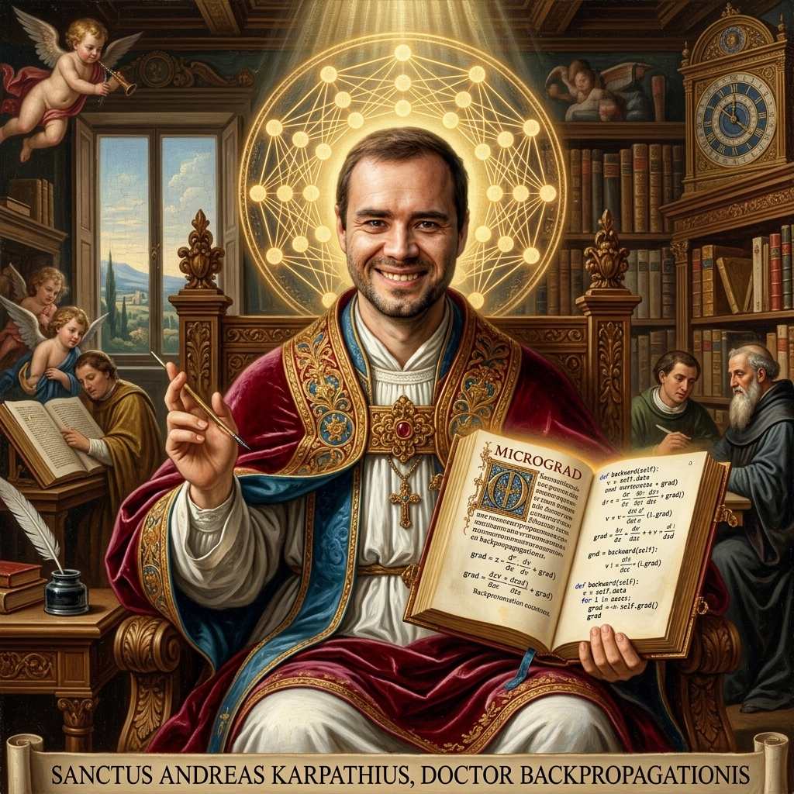
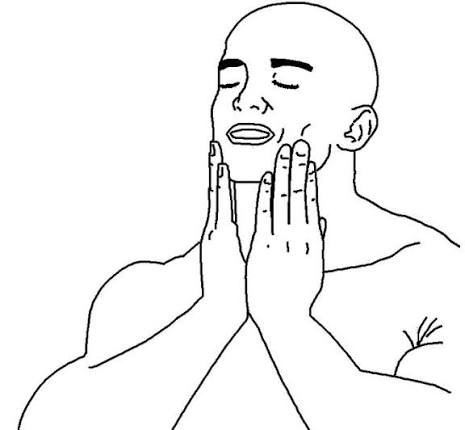

Background
I've been working as an engineer for a year now. I graduated last year and had been working on applied AI: building chatbots, RAG systems and agentic stuff. Don't get me wrong, this field is amazing and I learnt so much from it. I learnt how backend systems work, I learnt how AI is integrated in products, and a lot of other things. But there was this feeling of dissatisfaction in my heart. I wanted to dive deep. I wanted to work on something nobody else had worked on, something I would be proud to show off.
So I decided to specialize in LLMs, specifically the low-level side, the part that sits close to the hardware. Kernels, GPUs, the machinery underneath. I had a fairly justifiable maths background (computer engineering) to lean on. I wanted to be on that side, but not in research; on the engineering side. I already had enough foundational knowledge of ML and DL (up to sequential models).
I knew what Transformers were, but even with my love for mathematics I never dived deep into them. Maybe it was my own laziness, maybe my busy schedule (excuses, smh). Then came the day I stumbled upon this post on X. And I decided to change everything.
I started with the holy grail.

I learned the mathematics behind it (fairly complex). Then I tried to code it, and that's when I realized AI had fried my brain. I had forgotten the basics of PyTorch, the same PyTorch I used to write ML models with easily back in my undergrad days. Things started to get serious. It took me longer than it should have, but I finally did it: I coded up the Transformer. I didn't train it though, for various monetary reasons.
The actual GPT-2 part
Then I decided to train a GPT model, and the obvious one was GPT-2. I found our lord and saviour's video.

I coded along with the video. It's 4 hours long, but there is so much content packed into it and Andrej speaks so fast that it took me around 3 days (2 dedicated hours a day).
At around the 1.3 hour mark the model was done, but there were so many optimizations after that.
I understood some of them, but most of it flew over my head. Andrej also brushes past concepts
like flash attention, torch.compile and DDP. (Not his fault. If he had included all
of that, the video would have been 10 hours long.) Anyhow, I coded the whole thing along with him,
and since I knew I had to learn more about those concepts, I didn't train the model on the original
dataset there and then.
I took a step back and recreated GPT-2 on my own, up to the 1.3 hour mark, and fed it the tiny Shakespeare dataset just to verify that it worked. Felt like a bit of an achievement.

As for the optimizations, the simple implementation of flash attention is:
y = F.scaled_dot_product_attention(q, k, v, is_causal=True)I didn't like it. I wanted to learn more about flash attention, so I went and researched what was actually going on in the backend. And that's how my flash attention expedition began.